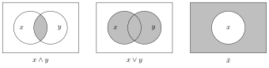
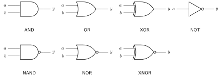
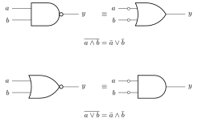
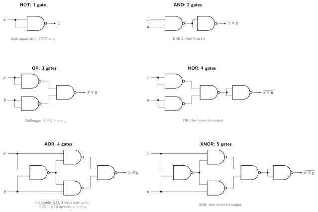

Boolean algebra describes logic over . AND is written or ; OR, or ; NOT, or . A variable or its complement is a literal.
| AND | OR | NOT() | XOR | NAND | NOR | XNOR | ||
|---|---|---|---|---|---|---|---|---|
| 0 | 0 | 0 | 0 | 1 | 0 | 1 | 1 | 1 |
| 0 | 1 | 0 | 1 | 1 | 1 | 1 | 0 | 0 |
| 1 | 0 | 0 | 1 | 0 | 1 | 1 | 0 | 0 |
| 1 | 1 | 1 | 1 | 0 | 0 | 0 | 0 | 1 |
These identities hold for :
| Property | AND form | OR form |
|---|---|---|
| Identity | ||
| Null | ||
| Idempotence | ||
| Complement | ||
| Involution | (self-dual) | |
| Commutative | ||
| Associative | ||
| Distributive | ||
| Absorption | ||
| Combining | ||
| Consensus | ||
| DeMorgan’s |
Consensus removes a logically redundant term: when , either or is already 1. Retaining that term can prevent a hazard (see Combinational Circuits).
Prove an identity by checking all input combinations. In set notation, AND is intersection, OR is union, and NOT is complement.

Duality: swapping and in a valid identity produces another valid identity.
The dual function uses the same swap. For example, the dual of is .
Generalized De Morgan’s theorem relates the dual to complementation (and CMOS pull-up/pull-down networks):
To complement an expression directly: take the dual, then complement each literal. E.g. .
A sum of products (SOP) ORs together AND-terms. In canonical SOP, every term includes every variable and matches exactly one truth-table row where the output is . For the 3-input majority function (true when ≥2 inputs are high):
Any expression reaches normal form by Shannon expansion about each variable:
A minterm is a product using every variable once (true or complemented), true on exactly row . There are of them:
| minterm | ||||
|---|---|---|---|---|
| 0 | 0 | 0 | ||
| 1 | 0 | 1 | ||
| 1 | 1 | 1 |
Each truth table has exactly one canonical SOP and one canonical POS, the basis for equivalence checking. There are functions of variables (16 for , 256 for ).
Canonical forms are rarely minimal. Reducing to a minimal SOP/POS (fewest terms, fewest literals) is logic minimization.
Material implication is : false only for . SystemVerilog assertion implication additionally has temporal sampling semantics.
The core move is the combining theorem applied repeatedly: . Each application drops a literal. An implicant is a product term that implies the function; a prime implicant is one that cannot lose any further literal. A minimal SOP is a sum of prime implicants covering every .
A K-map arranges the truth table so cells differing in one variable are adjacent, including wraparound. Combining adjacent minterms becomes “circle adjacent s and drop the variable that changes”. Columns and rows follow Gray-code order. For :
| 00 | 01 | 11 | 10 | |
|---|---|---|---|---|
| 0 | 0 | 0 | 1 | 0 |
| 1 | 0 | 0 | 1 | 1 |
Two groups of two cover all the s: column (varies ) gives ; the pair in columns (varies ) gives . So .
Grouping rules:
Input combinations that cannot occur (or whose output is irrelevant) are marked and may be grouped as either or , whichever enlarges a group. They cost nothing if left uncovered.
K-maps are practical to about 4 variables. Synthesis tools instead use algorithms: Quine-McCluskey (exhaustive tabular prime-implicant generation), Espresso (heuristic SOP minimizer), or reduced ordered Binary Decision Diagrams (canonical for a fixed variable order).
Deciding whether any input makes a formula true is Boolean satisfiability (SAT), the first problem proved NP-complete. Modern equivalence checkers and formal verification tools are built on SAT solvers alongside BDDs.
A logic diagram represents an expression as gates. Build from the outermost operator inward; analyze by labeling gate outputs from inputs outward.

An inversion bubble on a gate input or output replaces an explicit inverter.

Bubble pushing is DeMorgan in gate form: complementing all ports of an AND yields an OR and vice versa. Sliding bubbles through a network this way converts AND/OR logic into all-NAND or all-NOR form. Single-stage complementary static CMOS naturally implements inverting functions; noninverting gates use additional stages or other circuit styles.
A set of operators is functionally complete if it can build any function. is complete (canonical SOP uses only these). Crucially, NAND alone and NOR alone are each universal, which is why a single gate type can implement any logic in silicon.

XOR is commutative and associative, with , , . A chain gives parity ( iff an odd number of inputs are ). XNOR is equivalence, true iff the inputs match.
XOR is addition modulo 2; AND is multiplication. Together they form , where , so addition and subtraction coincide.
Sequential Circuits gives LFSR and CRC implementations.
A radix- positional number weights digit by . Binary encodes hardware values; octal and hexadecimal abbreviate bit groups:
| Radix | Name | Digits | Use |
|---|---|---|---|
| 2 | binary | 0-1 | what the hardware stores |
| 8 | octal | 0-7 | 3-bit groups (Unix permissions, legacy 12/36-bit machines) |
| 10 | decimal | 0-9 | human arithmetic |
| 16 | hexadecimal | 0-9, A-F | 4-bit nibbles, standard for addresses and registers |
An -bit unsigned number covers to : Because and , conversion to octal or hex is pure regrouping of bits from the right, no arithmetic: ### Signed: two’s complement
The standard signed encoding gives the most significant bit weight instead of . Its decisive property is that ordinary binary addition works for any signs, with no special casing.
assign neg = ~a + 1'b1;assign out = {{(M-N){in[N-1]}}, in}; for
an
-bit
output,
.Comparison with the alternatives:
| System | Range ( bits) | Zeros | Addition |
|---|---|---|---|
| Unsigned | 1 | direct | |
| Two’s complement | 1 | direct, same hardware as unsigned | |
| Sign/magnitude | 2 | needs sign-comparison logic |
Signed overflow happens only when adding two same-signed operands and the result sign differs. Carry-out of the MSB is not a reliable signed-overflow indicator.
assign overflow = (a[W-1] == b[W-1]) && (sum[W-1] != a[W-1]);An implied binary point splits integer and fractional bits.
Ua.b is unsigned with
integer and
fractional bits; Qa.b is signed two’s complement; here
includes the sign bit (conventions vary).
Negatives reuse two’s complement, so a
plain integer adder works unchanged; the point position is
interpretation only. Resolution is the grid spacing
();
quantization error is at most
for round-to-nearest and less than
for truncation, assuming no overflow.
| Code | Mapping | Property |
|---|---|---|
| BCD | each decimal digit in its own 4 bits () | exact decimal, wastes codes to |
| Gray | successive values differ in one bit () | one-bit adjacent transitions; CDC still needs synchronizers and timing constraints |
Gray conversion is pure XOR:
gray = bin ^ (bin >> 1), inverse is a prefix XOR.
Author: Sai Govardhan (saigov14@gmail.com) ## References
Textbooks
License: MIT.